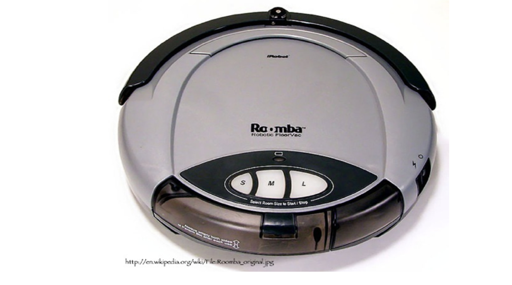

Introduction to Distributed Computing and Web Services¶
Publishing geospatial data¶

{kind=link}
What changed?¶
What changed?¶

What is this?¶

Internet¶
World Wide Web¶
Enabled by Internet
All Information from computers connected around the world.
Some of these nodes are servers
How do we connect to the Web and nodes talk to each other?¶
URL
HTTP
Uniform Resource Locator (URL)¶
Every node can be identified by a URL¶
Protocols (allow the nodes to connect to each other)¶

HTTP protocol for performing requests to servers¶
Defines how to connect to servers
Defines how to download data form servers
Most use: HTTP GET and HTTP POST
HTTP GET is a URL¶
http://localhost:8080/geoserver/topp/ows?
service=WFS&version=1.0.0&request=GetCapabilities
HTTP key/value pairs¶
http://localhost:8080/geoserver/topp/ows?
service=WFS &
version=1.0.0 &
request=GetCapabilities
- ? goes after the key value pairs
- & separates the key value pairs
- " " no white spaces nor space returns
HTTP POST¶
POST requests involves custom clients and sending of XML encoded data to a server. It is more verbose than HTTP GET. Every GET request here has an equivalent POST request, but the opposite is not true.
<?xml version="1.0"?>
<wfs:GetCapabilities
service="WFS"
version="1.0.0"
...
Encodings¶
When connecting to a node (server) encodings provide the format (arrangement of data elements) and syntax of the data and messages sent to and by the server.
A file in XML
An image in JPG
A temporary binary object in JAVA
Operation, interfaces and services¶
A well define HTTP GET request is called an operation.
An Interface is a set of operations.
A Service is a set of interfaces
Service¶
Distinct part of the functionality that is provided by an entity through interfaces (ISO 19119:2005). A service can define interfaces to for example:
manage travel reservations
get bank transactions
query maps
Vacuum cleaning robot analogy¶
A good analogy to a service is a vacuum cleaning robot. It provides a service, with a set of interfaces and a set of operations.
{kind=link}
{kind=link}
What operations can be defined to request a map on the Web?¶
Anybody can define an operation such as:
getMap
getImage
get2dmap
getLocation
{kind=link}
Heterogeneous services (lot of effort!)¶

Agreement of services is great!¶

Standards enable interoperability¶
Increase ability to access, fuse and apply diverse content when and where needed is critical to situational awareness and disaster planning/ response in cross-boundary and cross-domain settings